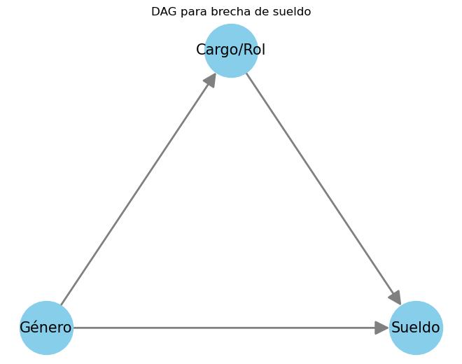
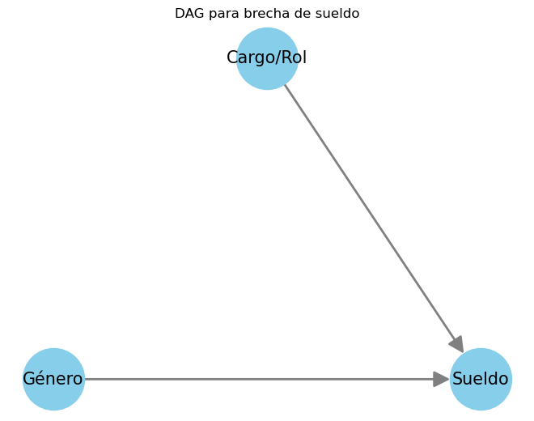
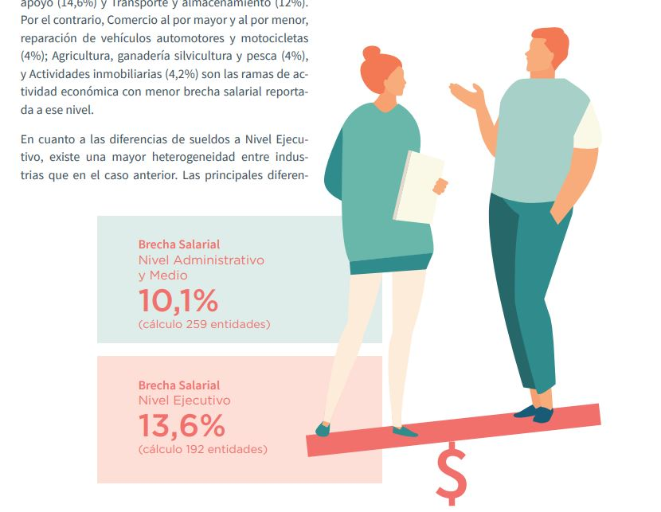

Diferencia salarial
Diferencia salarial entre géneros
Por una conversación que tuve hace tiempo, me quedó dando vuelta un aspecto particular respecto a la brecha salarial. Se sabe que en Chile y la mayoría de los países del mundo existe una brecha; los hombres, por ser hombres, ganan más que las mujeres. Me comentaron igual que, mirando mirando los sueldos por rol/nivel/posición en verdad no hay discriminación o la brecha se reduce. Si se mira en detalle los sueldos por género para cargos específicos la brecha no existe, pero si vemos la diferencia global efectivamente se aprecia una brecha significativa ¿La discrimnación existe o no entonces?
Aquí aparece un tema clásico respecto a análisis de datos, las variables control, análisis causal y la paradoja de Simpson. Es de esos casos raros donde puede haber una droga que sea mala para los hombres, mala para las mujeres pero buena para las personas. En general estas conclusiones opuestas son resueltas teniendo definido el modelo causal, normalmente representados por grafos (Directed Acyclic Graphs o DAGs). Este tipo de modelos define las reglas necesarias para estimar los efectos de ciertas variables en otras, explicitando por qué variables se debe controlar y por cuales no.
Para este ejemplo,inventaré unos datos y haré un par de reflexiones respecto al sentido que tiene, o no, mirar estadísticas desglosadas a distintos niveles. Para generar los datos, supondré que el sueldo que gana una persona depende de su cargo/rol/posición pero además es influenciado por su género de la siguiente manera
Para este ejemplo, tenemos que el género afecta indirectamente al sueldo a través del tipo de cargos al que pueden acceder (razonable supuesto, creo yo) y además afecta el sueldo directamente. El grafo “real” por supuesto puede ser mucho más complejo, incluyendo temas de educación, variables no observables y otros. De todas formas es un par de supuestos razonables que me ayudan a generar datos que coincidan con este grafo, y que veamos que pasa cuando se controla, o no, por la variable del cargo. Las reglas usadas son:
- Misma cantidad de hombres y mujeres (1000)
- Hombres entran en igual proporción a cargos con sueldos altos y con sueldos bajos
- Mujeres entran en un 70% a cargos con sueldos bajos y en un 30% a cargos con sueldos altos
- Los sueldos tienen un error normal, +- algunas lucas
- Las mujeres tienen un mini bono ambos roles en cuanto a salario
A quien le interese puede ver el código asociado en mi github.
Con los datos generados, vemos que la brecha global es de cerca de 100 lucas en promedio. Pero cuando hacemos el análisis por cargo, la brecha se revierte; las mujeres derechamente ganan más que los hombres tomando en cuenta el cargo.
Gender
Hombre 749.146391
Mujer 663.617914
Name: Wage, dtype: float64
Gender Role
Hombre Cargo alto 999.512615
Cargo bajo 501.766643
Mujer Cargo alto 1012.555364
Cargo bajo 509.038119
Name: Wage, dtype: float64La razón: mirar la brecha por cargo equivale a anular el efecto que tiene el género sobre los cargos a los que acceden. Si el mayor efecto del género se encuentra en las oportunidades de acceso a educación o a ciertas carreras, y de esa manera influye en los cargos a los que pueden acceder, ver los datos así lo enmascara por completo. El grafo correspondiente a este análisis sería:

Esto significa que TODO el efecto indirecto del género sobre el sueldo se anula, y por lo tanto no estamos viendo el efecto total real del género. Como tenemos el modelo completamente definido, podemos calcular el efecto directo e indirecto con un par de regresiones:
Efecto directo (c'): 9.547404815361539
Efecto indirecto (a*b): -95.29658939342197
Efecto total (c): -85.52847767702515Para estos datos de mentira, resulta que el efecto más importante es el indirecto, mientras que el directo es de hecho positivo. Por este tipo de posibles paradojas (que en verdad no lo son) es complejo decidir qué datos presentar, cuáles variables son buenos controles, y qué hechos estilizados merecen atención y cuáles no. Normalmente no se presenta un grafo con la declaración respecto al modelo que se tiene en mente y por lo tanto queda a criterio del lector si los datos resultan evidencia causal o no. Esto ocurre por ejemplo en el reporte de indicadores de género 2022 donde se muestra la brecha controlando por un montón de factores, entre ellos cargos:

En este caso da lo mismo igual, las mujeres ganan menos mirándolo desde todos los ángulos. Viva Chile.
También está el caso del banco central y su informe de Brechas de Género y Desempeño Macroeconómico de este año, que justamente controla por una chorrera de variables y todas sus combinaciones para estimar el promedio de la brecha:


Esto no está necesariamente mal pero tiene poco sentido si no está asociado al modelo causal que tienen en mente, como para poder evaluar la pertinencia de controlar o no por ciertas variables, bajo el supuesto que lo que se quiere estimar es el efecto del género a la diferencia salarial.
Conclusiones
La conclusión principal es que siempre hay que desconfiar de los datos (cuec, aló cadem). Presentarlos de una u otra forma puede ser una manera de dar vuelta hechos irrefutables, en algunos casos de manera maliciosa, o maquillarlos de manera inadvertida. Si no está presentado el grafo causal que representa el problema que se investiga es difícil evaluar los resultados. El grafo define las relaciones que las variables pueden tener y por lo tanto es testeable respecto a datos observados; define las dependencias/independencias de las variables y se pueden comprobar sin necesidad de experimentos. Hay, además, un problema bien grande de controlar por variables que uno no debería lo cuál genera relaciones espúreas que lleva a concluir cuestiones totalmente erradas. No es la idea de este blog, pero a quien le interese creo que Causal Inference in Statistics, a Primer es re bueno introductorio para quien ya sepa un poco de estadísticas, o pueden leer primero A book of why si les gustan más los libros de difusión. La última recomendación (y la única gratis) es el libro que está totalmente liberado en web The Effect
TL;DR Básicamente teman cada vez que controlan, o no, por alguna variable.